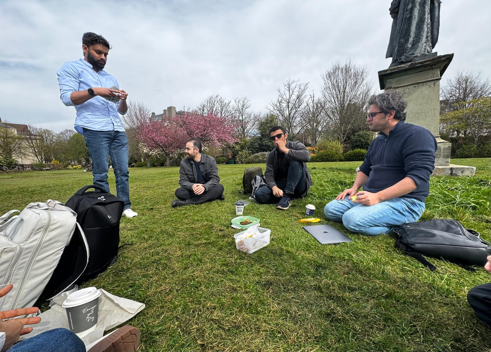

flowchart LR
classDef bigNode fill:#2780e3,stroke:#333,stroke-width:2px,font-size:16px,color:#fff
PhD[" PhD<br/>Application "]:::bigNode --> SupervisorLed[" Supervisor-led<br/>Path "]:::bigNode
PhD --> StudentLed[" Student-led<br/>Path "]:::bigNode
SupervisorLed --> GrantApply[" Supervisor Applies<br/>Directly "]:::bigNode
GrantApply --> GrantReceived[" Grant<br/>Received "]:::bigNode
GrantReceived --> PublishPHD[" Supervisor Publishes<br/>the PhD "]:::bigNode
PublishPHD --> Interview[" Interview "]:::bigNode
Interview --> SelectCandidate[" Candidate Selection "]:::bigNode
StudentLed --> StudentApply[" Student Applies<br/>Directly "]:::bigNode
StudentApply --> Decision{" Supervisor<br/>Selection "}:::bigNode
Decision -->|By Student| Offer1[" Student Finds a<br/>Supervisor "]:::bigNode
Decision -->|By University| Offer2[" University Assigns<br/>Supervisor "]:::bigNode
Offer1 --> PublishPHD1[" Interview "]:::bigNode
Offer2 --> PublishPHD1
PublishPHD1 --> SelectCandidate1[" Grant<br/>Received "]:::bigNode

Outline
- Getting into the Statistics Special Degree Program
- Life as a Statistics Honours Student
- Securing Scholarships and Adapting to PhD Life
- Life as an Overseas Student
Getting into the Statistics Special Degree

Why I Chose Statistics
- Unique value of the Statistics Special Degree at USJ
- Broad applicability across diverse fields
- Equips you for pursuing a PhD without a Master’s
Outline
- Getting into the Statistics Special Degree Program
- Life as a Statistics Honours Student
- Securing Scholarships and Adapting to PhD Life
- Life as an Overseas Student
Life as a Statistics Honours Student

Academic Journey
- Built a strong statistical foundation
- Improved soft skills through Statistical Seminar
- Real-world exposure via Statistical Consultancy
- Industry field visits and cross-domain experience
- Developed strong bonds with lecturers
Outline
- Getting into the Statistics Special Degree Program
- Life as a Statistics Honours Student
- Securing Scholarships and Adapting to PhD Life
- Life as an Overseas Student

Why Choose to Do a PhD?
- Self Growth
- Opportunity to Explore a Topic in Depth
- Read, Learn, and Discover Continuously
- Develop Critical Thinking and Problem-Solving Skills
- Build a Global Academic and Professional Network
- Open Doors to Academic, Industry, and Research Careers
UKRI Studentships

- Fully funded: Tuition + £19,000+ annual stipend
- Offered via DTPs (Doctoral Training Partnerships) and CDTs (Centres for Doctoral Training)
- Available across 9 research councils (EPSRC, ESRC, AHRC, etc.)
- More info: ukri.org
Outline
- Getting into the Statistics Special Degree Program
- Life as a Statistics Honours Student
- Securing Scholarships and Adapting to PhD Life
- Life as an Overseas Student
Life as an Overseas Student


Life as an Overseas Student

